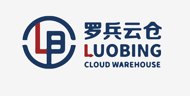
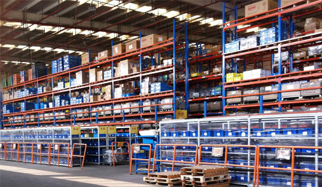
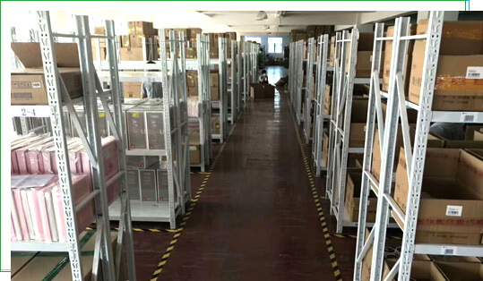
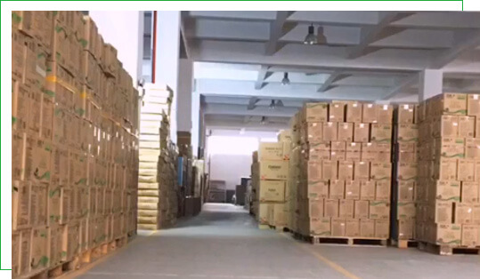

罗织云网，兵达城下
操作流程
在目前中国电子商务飞速发展的时代，电商公司竞争也日益激烈，电商企业后端实力直接关系着能否在如此竞争激烈的环境中立足。为解决后顾之忧，省出精力专攻营销，越来越多的电商企业已经开始与第三方云仓合作。通过仓储托管，解决仓库、人员、库存、管理等难题。做到降低成本，提高效率，减少出错，提升客户体验，最终实现电商卖家的‘轻模式’迅速发展。携手共赢，罗兵云仓 为此而生，是您值得信赖的第三方仓储外包托管服务平台。

- 【业务洽谈】：仓储托管业务洽谈，定制方案，签订合同。
- 【系统对接】：有ERP的商家可以使用自有ERP对接云仓WMS系统，没有ERP的商家，免费提供吉客云ERP，实现平台，商家，云仓对接。
- 【到仓卸货】：详细核对送货单，及时安排卸货。
- 【验收入库】：核对订单信息，确认无误安排入库上架，如有问题及时反馈客户，把控源头。
- 【系统录入】：入库数量核实后入库订单确认，商家系统实时查询。进销存系统数据同步，一目了然。

- 【货物上架】：仓库配有重型,中型,轻型等货架,适合各类货物的存放。条码化管理，提供打标贴标换标增值服务。
- 【订单操作】：智能批次，无纸化作业，电子分拨墙播种法，精准、高效。
- 【货物包装】：根据定制方案，云仓代打包，严格流程，人机结合，标准化流水线作业，高速高效。
- 【货物盘点】：每月一盘，年终大盘，保证系统与实物一致，差异包赔，随时抽检。

- 【出库扫描】：PDA扫描出库，验货，系统自动报错，高准确率！
- 【货物对接】：仓内扫描信息，避免丢件，详细交接。
- 【异常处理】：提供临时拦截，仓内拦截，退回拦截，以及其他异常或突发事件处理。
- 【联系处理】：专职客服群，全程跟进，零距离沟通，合作更顺畅。
- 【售后处理】：售后退货或拒签件，云仓签收后第一时间处理，及时验货，问题件及时反馈，提供售后解决方案。真正的仓配一体化，让每位电商卖家无后顾之忧！
